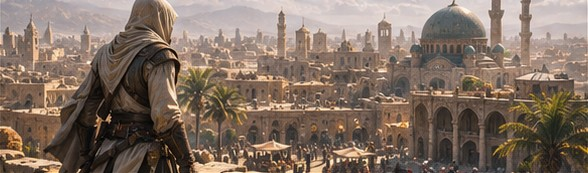

Protagonista
Basim Ibn Ishaq
Un ladrón callejero que se convierte en miembro de los Ocultos.
Basim comienza como un joven ladrón en Bagdad y se incorpora a los Ocultos para descubrir su lugar en un mundo de conspiraciones. Mirage recupera el protagonismo del sigilo, la infiltración y los asesinatos cuidadosamente preparados.
Basim comienza como un joven ladrón en Bagdad y se incorpora a los Ocultos para descubrir su lugar en un mundo de conspiraciones. Mirage recupera el protagonismo del sigilo, la infiltración y los asesinatos cuidadosamente preparados.
Este dossier reúne los personajes, el contexto histórico, los lugares y las actividades que definen esta entrega. La información está organizada para descubrir el juego sin perderse entre sus distintas capas.
Las figuras que dan forma a la historia de Assassin’s Creed Mirage.

Un ladrón callejero que se convierte en miembro de los Ocultos.
Una veterana de la Hermandad que guía a Basim en su formación.
Figura cercana a Basim, ligada a sus dudas y recuerdos.
Comerciante y contacto que ayuda a Basim en Bagdad.
Bagdad · 861 d. C. · Una recreación histórica que combina acontecimientos reales y ficción.
La historia sigue la transformación de Basim desde los callejones de Anbar hasta el corazón de Bagdad. Sus investigaciones lo llevan a descubrir una conspiración que amenaza a la ciudad y a enfrentarse a los secretos de su propia identidad.
Regiones, ciudades y escenarios que dan personalidad a esta aventura.
Ciudad circular y densamente poblada, dividida en distritos.
Asentamiento donde comienza la vida de Basim.
Fortaleza de los Ocultos y lugar de entrenamiento.
Los sistemas principales que definen la forma de jugar esta entrega.
Agacharse, ocultarse, distraer y eliminar sin ser visto.
Dardos, bombas de humo, trampas y cuchillos arrojadizos.
Investigar redes y elegir cómo acercarse a cada objetivo.
Desplazamiento ágil por tejados, callejones y monumentos.
Águila que ayuda a reconocer guardias y puntos de interés.
Recursos para sobornar, distraer o desbloquear ayudas.
Qué hacemos durante la aventura, cómo exploramos el mundo y qué sistemas conviene dominar.
Investigar objetivos mediante contratos y pistas, marcar guardias con Enkidu, localizar entradas y rutas alternativas, robar documentos, escuchar conversaciones y elegir el orden de las operaciones.
Detalles y sistemas especiales que merece la pena descubrir durante la exploración.
Los enigmas repartidos por Bagdad conducen a recompensas ocultas.
Los contratos permiten cumplir objetivos opcionales con condiciones especiales.
La ciudad contiene referencias a relatos, personajes y lugares de la Edad de Oro abasí.
ARCHIVO EN AMPLIACIÓN · Se añadirán ubicaciones concretas y capturas propias a medida que se complete la documentación de cada juego.
Recuperó una estructura más compacta y centrada en el sigilo, como homenaje a las primeras entregas de la saga.